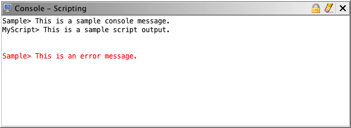

The Console is a generic message output component.
Any plugin can use the console service to send messages to the console. It is mostly used to display output from scripts.
The Console shows two different kinds of output, each in a different color.

This command stops the console from automatically scrolling as new output is appended.
This command clears all content in the Console component.
If the console contains text that represents a valid symbol or address, then you can navigate to that symbol or address by double-clicking on it. You will know if the text is valid, because the mouse cursor will change from the pointer to a hand.
Provided by: ConsolePlugin